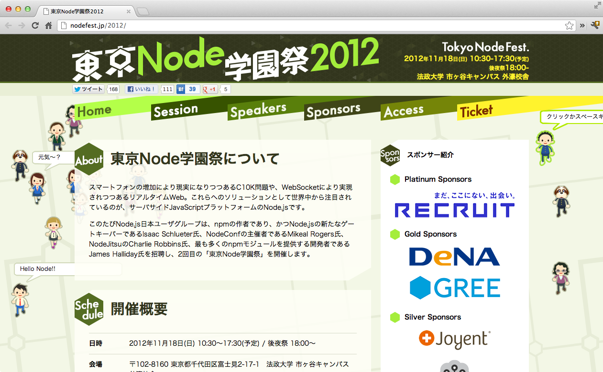
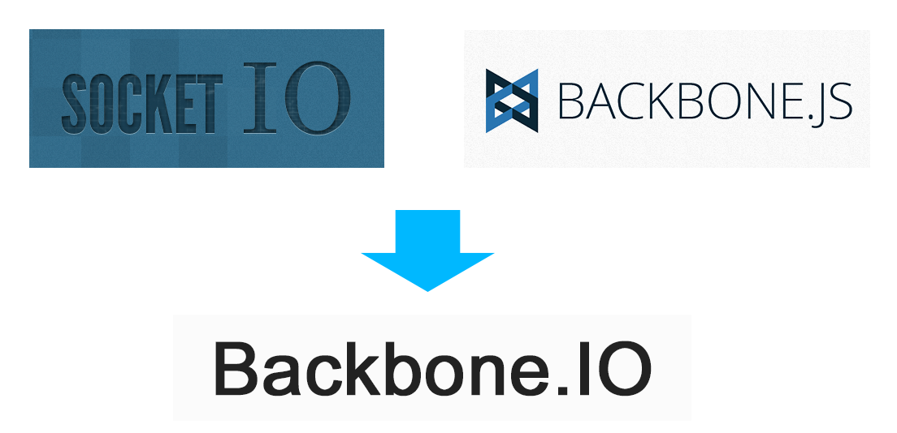
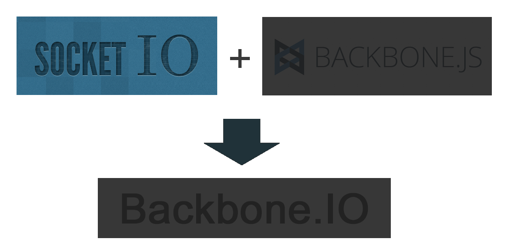
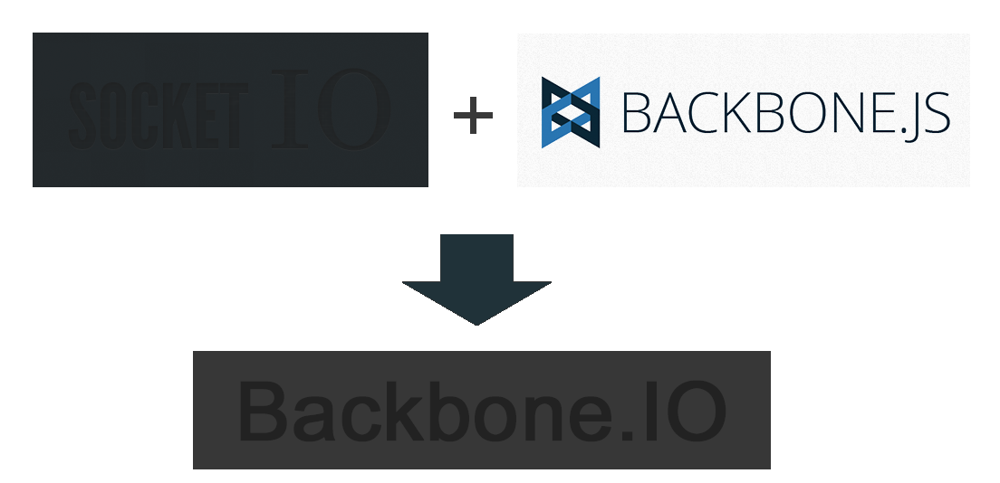
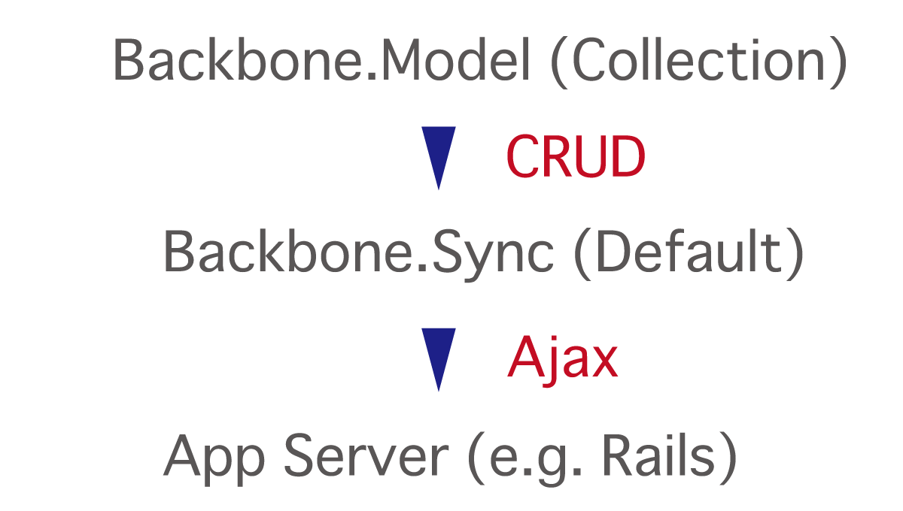
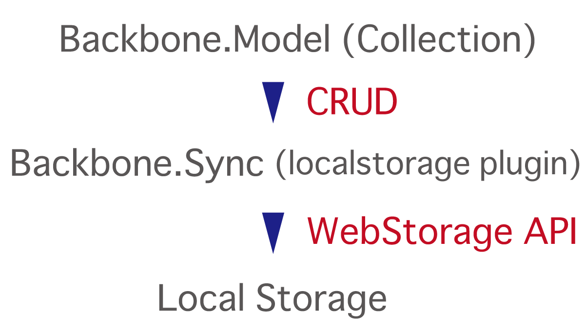
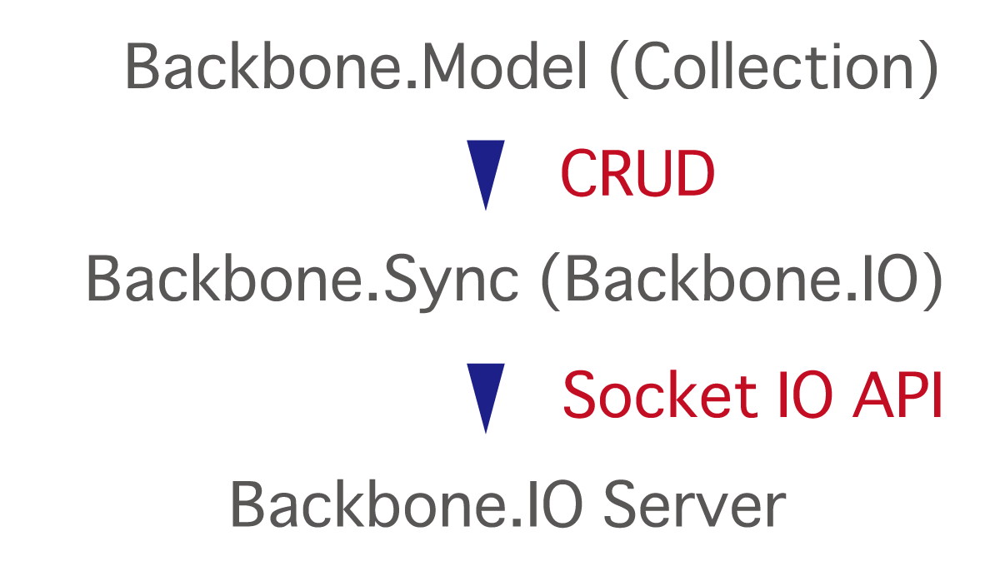
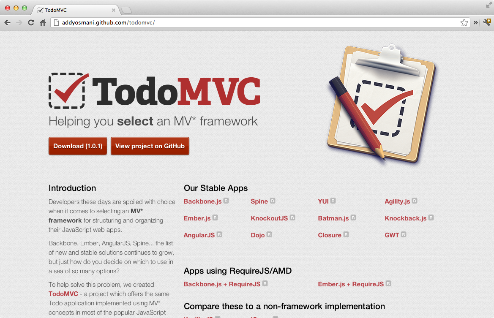
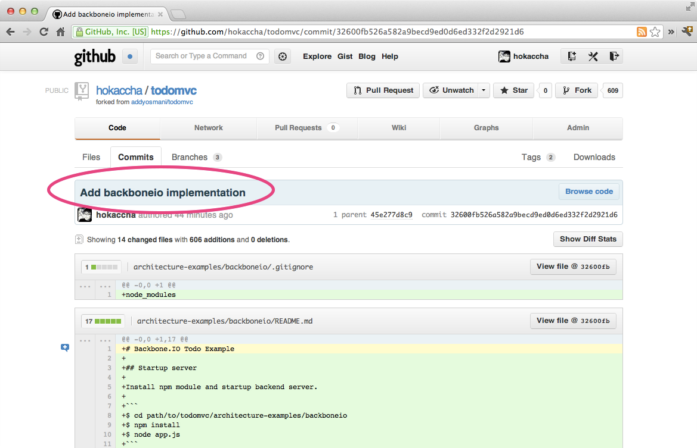

Backbone.IOでつくる
リアルタイムアプリ
2012.10.01
自己紹介
- 外村 和仁
- @hokaccha
- 株式会社 ピクセルグリッド
- JavaScript, Node.js, Ruby

今日の主題
リアルタイムWeb
プラス
クライアントサイド
MVC



What's Socket IO?
Node.jsでつくられた
リアルタイム通信
のためのモジュール
最大の利点
（個人的見解）
様々な環境のサポート
通信方法のサポート
- WebSocket
- Adobe® Flash® Socket
- AJAX long polling
- AJAX multipart streaming
- Forever Iframe
- JSONP Polling
ブラウザサポート
- Internet Explorer 5.5+
- Safari 3+
- Google Chrome 4+
- Firefox 3+
- Opera 10.61+
- iPhone Safari
- iPad Safari
- Android WebKit
- WebOs WebKit
その他にも様々な便利機能
- 直感的で使いやすいAPI
- スタンドアローンサーバー
- セッション
- 認証
- ネームスペース
サーバーサイド（Node.js）
var io = require('socket.io').listen(8080);
io.sockets.on('connection', function (socket) {
socket.on('message', function(data) {
socket.broadcast.emit('message', data);
});
});クライアントサイド
<script src="http://localhost:8080/socket.io/socket.io.js"></script>
<script>
var socket = io.connect('http://localhost:8080');
// サーバにメッセージを投げる
$('button').click(function() {
socket.send('hello!');
});
// メッセージを受け受け取る
socket.on('message', function(data) {
console.log(data);
});
</script>DEMO

Backbone.Sync

Backbone.Sync
は上書き可能

DEMO
Backbone.IO



DEMO
app.js （backend）
var backboneio = require('backbone.io');
var backend = backboneio.createBackend();
backend.use(backboneio.middleware.memoryStore());
backboneio.listen(3030, { todo: backend });$ diff backbone backboneio
diff -ur backbone/index.html backboneio/index.html
--- backbone/index.html
+++ backboneio/index.html
@@ -56,7 +56,8 @@
<script src="../../assets/jquery.min.js"></script>
<script src="../../assets/lodash.min.js"></script>
<script src="js/lib/backbone-min.js"></script>
- <script src="js/lib/backbone-localstorage.js"></script>
+ <script src="http://localhost:3030/socket.io/socket.io.js"></script>
+ <script src="http://localhost:3030/socket.io/backbone.io.js"></script>
<script src="js/models/todo.js"></script>
<script src="js/collections/todos.js"></script>
<script src="js/views/todos.js"></script>$ diff backbone backboneio
diff -ur backbone/js/app.js backboneio/js/app.js
--- backbone/js/app.js
+++ backboneio/js/app.js
@@ -2,6 +2,7 @@
var ENTER_KEY = 13;
$(function() {
+ Backbone.io.connect('http://localhost:3030');
// Kick things off by creating the **App**.
new app.AppView();$ diff backbone backboneio
diff -ur backbone/js/collections/todos.js backboneio/js/collections/todos.js
--- backbone/js/collections/todos.js
+++ backboneio/js/collections/todos.js
@@ -9,12 +9,15 @@
// The collection of todos is backed by *localStorage* instead of a remote
// server.
var TodoList = Backbone.Collection.extend({
+ initialize: function() {
+ this.bindBackend();
+ },
// Reference to this collection's model.
model: app.Todo,
- // Save all of the todo items under the `"todos"` namespace.
- localStorage: new Store('todos-backbone'),
+ // Setting backend.
+ backend: 'todo',
// Filter down the list of all todo items that are finished.
completed: function() {ね、簡単でしょう？
まとめ
Backbone.IOを使うことの利点
- Backbone.jsでの開発スタイルをそのまま持ち込める
- リアルタイム通信にSocket.IOを使うので安心
- サーバー側に（ある程度）ロジック持ち込まなくてもいける
Backbone.IOの欠点
- まだ開発途中
- しかも最近開発あんまり活発じゃない
- かゆいところに（まだ）手が届いてない